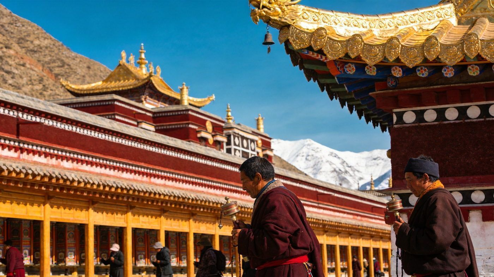
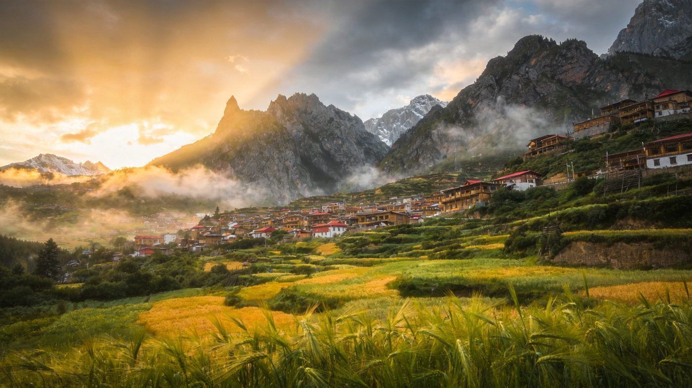
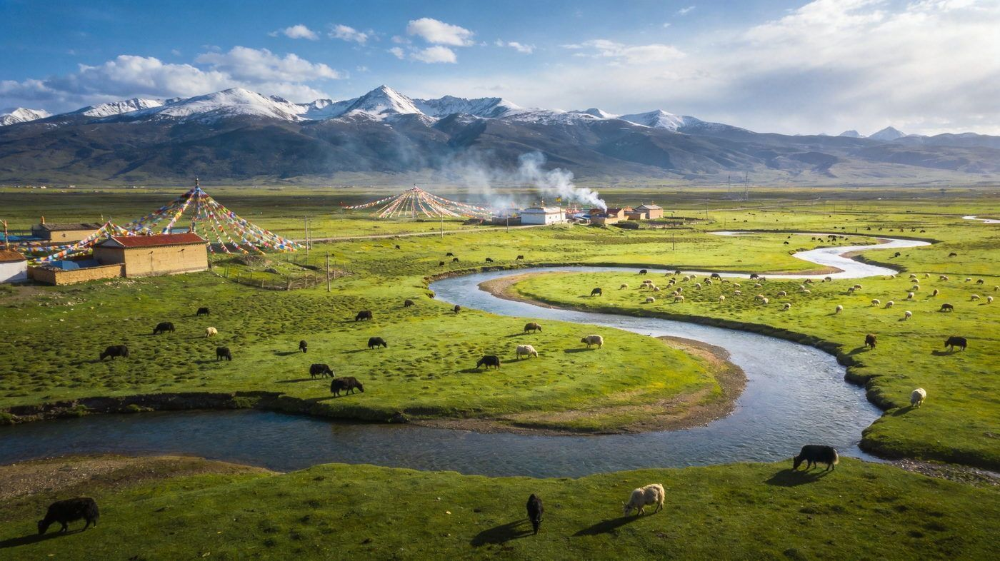

⛰️ 甘南 · GANNAN TIBET GUIDE
甘南双版藏地指南
兰州以西的高原秘境，草原、藏寺、石城、湖泊兼备，被称作「小西藏」。核心看点：拉卜楞寺、扎尕那石城与洛克之路、桑科草原、郎木寺、尕海湖。求快走 3 天精华版，想深度走 5 天深度版。适合 1–3 人，含行程 / 住宿 / 美食 / 预算 / 出行方式对比，海拔 3000 米上下请留意高反。
📍 目的地：甘南（甘肃·藏区）👥 1–3 人⏱️ 3 天 / 5 天双方案💰 人均预算已附🏔️ 海拔约 2000–3500m
✨3 天精华 · 经典版
核心策略：D1 夏河拉卜楞寺+桑科草原，D2 扎尕那石城，D3 扎尕那晨雾+洛克之路返程，甘南最经典的两张名片全打满。
👥 1–3 人适配：景区分散、景点间车程长，3 天紧凑适合 自驾或包车；预算按 人均 标注。首日先到低海拔适应，别赶。
🗺️ 行程安排
DAY 1 · 夏河拉卜楞寺 + 桑科草原
🚗/🚌 兰州 至 夏河（约3.5–4h）🏛️ 拉卜楞寺·世界最长转经长廊
🐎 桑科草原骑马看晚霞🏨 宿夏河县城
💡 拉卜楞寺转经长廊约 3.5 公里、2000+ 转经筒，必须顺时针走；外围转经廊免费，大殿联票约 40 元（含讲解），贡唐宝塔登塔约 20 元俯瞰全景。桑科草原免费，傍晚光线最佳。
DAY 2 · 扎尕那石城
🚗 夏河 至 扎尕那（经合作约4h）🏞️ 下午 仙女滩·仙女湖轻徒步
🌇 达日观景台看日落金山🏨 宿扎尕那景区内民宿
⚠️ 扎尕那门票约 80 元（含景交，3 天有效）。景区四村（东哇/业日/达日/代巴），推荐住景区内以便看晨雾。海拔约 3000–3300 米，抵达当天慢行防高反。
DAY 3 · 扎尕那晨雾 + 洛克之路返程
🌫️ 清晨 6:30 观景台看晨雾日出🛣️ 洛克之路自驾赏石峰峡谷
🚗 下午 返兰州
💡 扎尕那晨雾 6:30–8:00 最美，日出洒金超震撼。洛克之路多砂石、连续弯道、少加油点，新手慎自驾，建议包车熟路司机。
🌄5 天深度 · 环线版
在精华版基础上连成一线，补郎木寺（一镇跨两省）与尕海湖（高原候鸟湿地），节奏更松、体验更完整。
👥 1–3 人适配：5 天环线车程长，包车/自驾最顺；郎木寺、尕海湖都在环线上可溜达。预算按 人均 标注。
🗺️ 行程安排
DAY 1 · 兰州 → 夏河
🚗 兰州出发（约3.5–4h）🏛️ 拉卜楞寺转经长廊+大殿
🐎 桑科草原自由活动🏨 宿夏河县城
💡 拉卜楞寺可留半天慢慢逛，转经祈福、看辩经（下午 2–4 点），红墙金顶配蓝天超出片。
DAY 2 · 尕海湖 + 郎木寺
🦆 尕海湖湿地观候鸟🏘️ 郎木寺·一镇跨两省
🥾 纳摩大峡谷轻徒步🏨 宿郎木寺镇
⚠️ 尕海湖外围公路早看镜头倒影免费，进木栈道观景台约 50 元（候鸟最盛在夏季）；郎木寺门票约 30 元，纳摩峡谷野趣足。
DAY 3 · 郎木寺 → 扎尕那
🌅 郎木寺清晨红石崖晨光🚗 车程约 2h 至扎尕那
🏞️ 下午 仙女滩轻徒步+日落🏨 宿扎尕那景区内
💡 扎尕那门票 80 元 3 天有效，住景区内看晨雾日出，是这版的重头戏。
DAY 4 · 扎尕那全天
🌫️ 清晨晨雾日出🏔️ 达日观景台·仙女湖·洛克观景台
🍲 藏家民宿围炉晚餐
⚠️ 一整天慢节奏玩石城，晨雾、雪山、藏寨一天光线多变，趁光线多变多拍不同点位。
DAY 5 · 洛克之路 → 兰州返程
🛣️ 洛克之路自驾赏景🚗 下午 返兰州
🛍️ 采购特产
💡 洛克之路风景绝美但砂石多、弯道急、加油点少，务必满油出发并请熟路司机驾驶。
⭐特色景点 · 单独详览
把甘南最有辨识度的 3 个点单独拎出来说清楚——值不值得去、怎么玩。

拉卜楞寺 · 世界藏学府
夏河县
拉卜楞寺 · 世界最长转经长廊
藏传佛教格鲁派六大寺院之一，被誉为「世界藏学府」，建于 1709 年。沿寺院外墙的转经长廊长约 3.5 公里、2000 多座转经筒，是公认世界最长的转经廊。红墙金顶、经幡招展，清晨信徒转经诵经氛围极浓。
👍 必去理由：甘南人文第一站。外围转经廊免费，大殿联票约 40 元（含讲解），贡唐宝塔登塔约 20 元俯瞰全景；下午 2–4 点可看辩经。记得顺时针转经、殿内禁拍。
配图：原创生成 · 无版权风险

扎尕那 · 石城秘境
迭部县
扎尕那 · 藏地石城与洛克之路
被《中国国家地理》评为「十大非著名山峰」之一，四面石峰如城墙环抱，山间草甸、梯田与四座藏寨错落分布，清晨晨雾缭绕如仙境，探险家洛克曾盛赞其美丽。洛克之路沿线石峰峡谷与云海极其震撼。
👍 必去理由：甘南自然天花板。门票约 80 元（含景交，3 天有效）；晨雾 6:30–8:00 最梦幻，达日观景台看日出，仙女滩仙女湖轻徒步老少皆宜，建议住景区内。
配图：原创生成 · 无版权风险

桑科草原 · 高原牧场
夏河县
桑科草原 · 高原牧场骑马
藏区典型的高山草甸，蓝天白云下草地如毯、牦牛与羊群悠然吃草，夏季 6–9 月草原翠绿、野花如织，是骑马、露营、看夕阳的好去处，距拉卜楞寺仅约 10 公里。
👍 必去理由：与拉卜楞寺就近串联，免费入园。傍晚骑马上马山看日落加大片出片率；喜欢住宿的可体验草原民宿/诺尔丹营地。
配图：原创生成 · 无版权风险
🚗怎么去：自驾 vs 包车 vs 跟团
甘南景点分散、车程长，怎么走影响体验。下面把三种方式讲透。
甘南自驾/包车/跟团三种出行方式对比
| 维度 | 🚗 自驾 | 🚙 包车 | 🚌 跟团 |
|---|
| 核心体验 |
时间自由、可在晨雾/日落灵活停留到点收队 |
熟路司机驾驭砂石弯道高海拔，同样自由 |
行程固定、全程讲解省心，但自由受限 |
|---|
| 适合有山路驾驶经验、享受开车的游客 | 适合不想开山路高反的 2–3 人团 | 适合带长辈小孩、图省心的游客 |
| ✔ 自由度最高 | ✔ 免山路压力、可家庭拼车分摊 | ✔ 全程安排讲解 |
| 费用参考 |
5 天租车+油费约 900–1800 元/车 | 包车约 600–900 元/天（含司机） | 人均约 1500–3000 元起 |
|---|
| ✔ 多人分摊人均最省 | ✘ 人少时人均偏高 | ✘ 警惕低价购物团 |
| 💡 一句话建议：有山路经验且 2–3 人 → 自驾；不想开山路想自由 → 包车；带老人小孩图省心 → 跟团（选纯玩）。 |
|---|
👥 1–3 人怎么选：2–3 人自驾/包车最划算；单人可拼车/跟团，避免为单点折返。洛克之路砂石弯道多、加油点少，请务必满油并谨慎驾驶。
🏨住宿推荐
三档价位，均为 2 人房计。
经济型藏式客栈/县城宾馆
约 120–220 元/晚 · 人均 60–110
夏河县城、郎木寺镇藏式客栈，干净实惠，推窗即见草原或街巷。
中端舒适中档藏风民宿/酒店
约 250–450 元/晚 · 人均 125–225
扎尕那景区内观景民宿、县城舒适型，方便看晨雾日出。
高端体验诺尔丹营地/景观度假
约 800–2000+ 元/晚 · 人均 400–1000+
桑科草原诺尔丹营地（全球顶级野奢）、景观木屋，适合度假出片。
🍲甘南必吃清单
藏地风味 + 高原牛羊肉，人均 30 元就能吃到非常饱。
💰预算对比（人均）
区间为保守–宽松，实际以淡旺季与选择为准（不含往返兰州大交通）。
甘南3天与5天方案人均预算对比
| 项目 | 3天精华版 | 5天深度版 |
|---|
| 市内大交通（兰州往返等） | 约 300–600 | 约 300–600 |
|---|
| 住宿 | 2 晚 120–450 | 4 晚 240–900 |
|---|
| 餐饮 | 约 180–350 | 约 300–600 |
|---|
| 门票+景交（拉卜楞/扎尕那等） | 约 120–160 | 约 200–280 |
|---|
| 交通/包车（人均分摊） | 约 400–900 | 约 700–1500 |
|---|
| 合计 · 人均 | 约 1200–2400 | 约 1800–3800 |
|---|
💡 怎么省：拼车/拼团分摊交通最省；9 月错峰住宿可比 8 月旺季便宜近一半；门票仅占小头，别为省交通误了景。警惕「全部景点免费」「7 天 6 晚 999 元」低价团陷阱。
🧭避坑 & 实用贴士
- 防高反：甘南海拔 2000–3500 米，首日别剧烈运动、别急洗澡，备氧气瓶和葡萄糖，步行放慢。
- 转经要顺时针：拉卜楞转经长廊及寺内均顺时针、右手转筒，殿内禁拍、脱帽摘墨镜，尊重藏地习俗。
- 洛克之路别随意自驾：砂石多、连续弯、加油点少，务必满油出发，新手或带娃建议交给熟路司机。
- 警惕低价团：甘南文旅已多次辟谣「全景区免费」，超低价团暗藏强制购物/食宿缩水，选纯玩正规社。
- 旺季提前订：扎尕那景区内民宿暑期供不应求，6–9 月草原最美但人最多，提前订房并做好防晒、带厚外套。